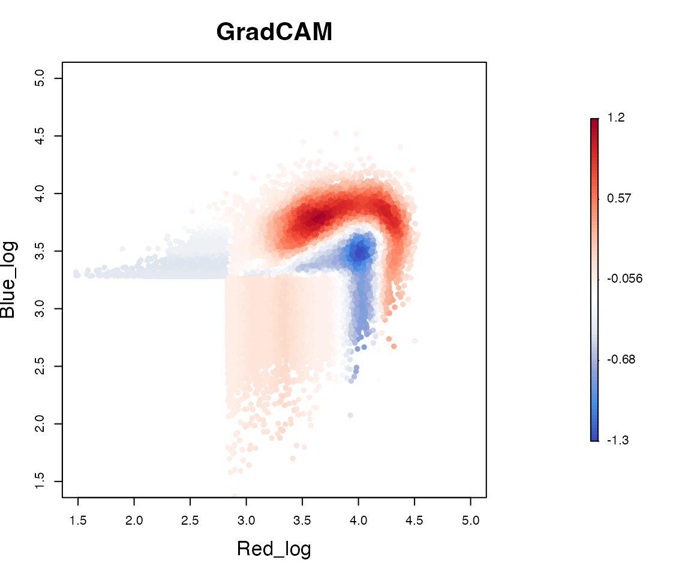
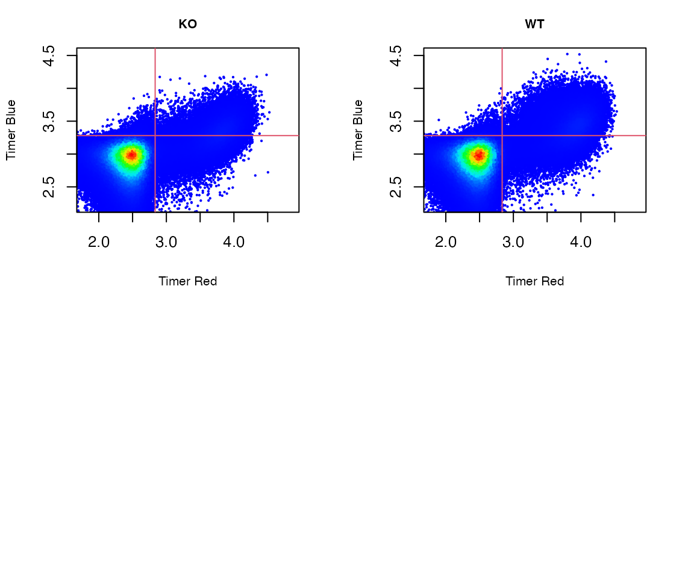
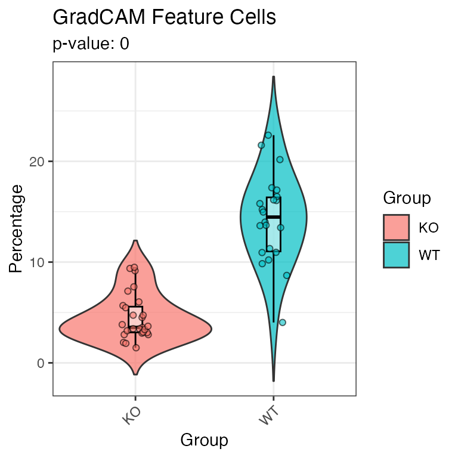
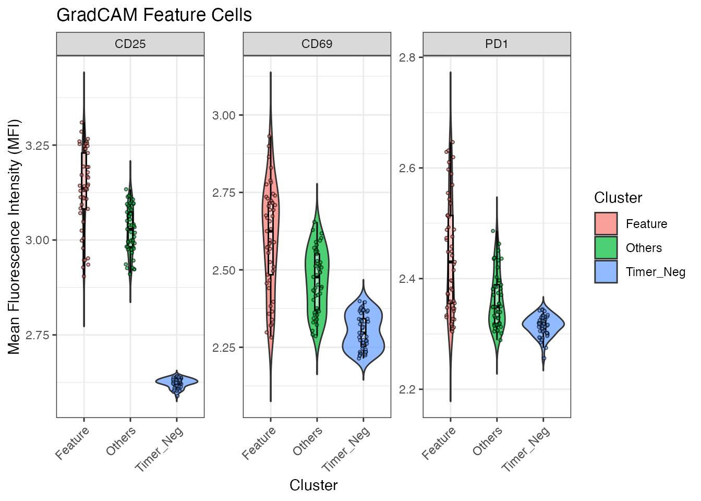

Getting Started with TockyConvNetR Analysis
Dr Masahiro Ono
2025-06-09
Source:vignettes/TockyConvNetRanalysis.Rmd
TockyConvNetRanalysis.Rmd
Introduction to Fluorescent Timer and the Tocky System
Fluorescent Timer proteins change their emission spectra over time, serving as powerful tools for monitoring transcriptional dynamics in vivo. Our recent efforts have successfully implemented data preprocessing methods in the TockyPrep package (Ono (2024b), Ono (2025)). Additionally, to analyze Timer fluorescence dynamics and apply quantitative and statistical analysis methods, we have developed the TockyLocus package (Ono (2024a)). However, analyzing complex Timer profiles, as typically seen in flow cytometric data from Foxp3-Tocky mice, remains challenging.
Aim
To overcome these challenges, applying machine learning methods represents an attractive approach. The package suite, TockyMachineLearning, provides comprehensive methods for identifying feature cells that represent group-specific features in Timer profiles.
Specifically, the current TockyConvNetR package offers Random Forest methods developed for analyzing flow cytometric Fluorescent Timer data.
Relationship to the Packages TockyPrep and TockyLocus
The TockyPrep package is designed to facilitate data preprocessing for flow cytometric Fluorescent Timer data. Subsequently, the TockyLocus package leverages this preprocessed data to apply data categorization methods, enabling quantitative analysis of Timer Angle data (Bending et al. (2018)). However, this approach is applicable to one-dimensional data only.
The TockyConvNetR package utilizes the special
object class TockyPrepData provided by the
TockyPrep package to perform machine learning
analysis
Install TockyConvNetR
To begin using TockyConvNetR, you need to install both the TockyConvNetR and TockyPrep packages from GitHub:
# Install TockyPrep and TockyConvNetR from GitHub
devtools::install_github("MonoTockyLab/TockyPrep")
devtools::install_github("MonoTockyLab/TockyConvNetR")Sample Workflow
Identifying CNS2-dependent Foxp3 transcriptional dynamics
This section guides you through analyzing flow cytometric data from cells expressing Fluorescent Timer proteins. In the example workflow, we aim to identify CNS2-dependent transcription dynamics in Foxp3-Tocky mice.
Ensure you have:
- Training Data: Analyzing Fluorescent Timer reporter activity using flow cytometry.
- Independent Test Data: Separate dataset for validation purposes.
Preprocessed data and analysis methods are provided via the
TockyPrep package’s TockyPrepData
class.
Load example data included in TockyConvNetR:
file_path <- system.file("extdata", package = "TockyConvNetR")
filenames <- list.files(path = file_path, pattern = 'rda')
files <- file.path(file_path, filenames)
for(i in files){load(i)}This loads two datasets: training data train_x and test
data test_y, obtained from flow cytometric analysis of WT
Foxp3 Tocky mice and CNS2 KO Foxp3 Tocky mice.
- Foxp3 Tocky mice or WT Foxp3 Tocky mice: These mice carry the Foxp3-Timer transgene, which synchronously expresses the Fluorescent Timer (specifically Fast-FT) alongside Foxp3 transcription.
- CNS2 KO Foxp3 Tocky mice: In these mice, a Conserved Non-coding Sequence (CNS), specifically CNS2 of the Foxp3 gene, which is approximately 500 base pairs in length, has been deleted from the Foxp3-Timer transgene using CRISPR technology.
#The summary of the training data, train_x
show(train_x)## TockyPrepData Object:
## Total cell number: 1804517
## Variables: file, Angle, Intensity, FSC.A, Timer.Blue, Timer.Red
## Total sample number: 34
## Groups: KO, WT
#The summary of the test data, test_y
show(test_y)## TockyPrepData Object:
## Total cell number: 1974400
## Variables: file, Angle, Intensity, FSC.A, Timer.Blue, Timer.Red
## Total sample number: 49
## Groups: KO, WTThe dataset was generated by analyzing T-cells from Foxp3-Tocky mice (WT) and CRISPR-mediated Foxp3-Tocky mutants, specifically CNS2KO Foxp3-Tocky mice (KO). Here we aim to identify CNS2-dependent Foxp3 transcription dynamics in the Timer space in a data-oriented manner.
Image Conversion for Tocky ConvNet Modelling
Convert TockyPrep data into 100x100 resolution images for training:
train_x <- ImageConversion(train_x, output = 'train_images')
test_y <- ImageConversion(test_y, output = 'test_images')This conversion creates train_images and
test_images directories containing labeled training and
sample data for Python-based modeling with
TockyConvNetPy.
Now proceed with TockyConvNetPy analysis using Python and Keras!

Inverse Image Conversion for Analysing Grad-CAM Output
After successfully training your TockyCNN model in python, analyze the output from Gradient-weighted Class Activation Mapping (Grad-CAM):
In the current vignette, we use the pre-analysed TockyCNN Grad-CAM output from TockyConvNetPy. Import the Grad-CAM output as a csv file:
csv_filename <- list.files(path = file_path, pattern = 'csv')
file_csv <- file.path(file_path, csv_filename)
gradcam_heatmap <- read.csv(file_csv)Use inverseGradCAM to map Grad-CAM data, which is a 100
x 100 image data, to original cytometry data:
feature_cells <- inverseGradCAM(x = test_y, feature_matrix = gradcam_heatmap, mode = 'gating', ncol =2, nrow = 1)Visualize Grad-CAM within the Timer fluorescence space:
feature_cells <- inverseGradCAM(x = test_y, feature_matrix = gradcam_heatmap, mode = 'gating', ncol =2, nrow = 1, percentile = 0.75)
plotInverseGradCAM(x = test_y, feature_matrix = gradcam_heatmap, xlim = c(1.5,5), ylim = c(1.5,5))
T cells exhibiting WT Foxp3 Tocky-specific features are represented
by warm colors (red), whereas those related to CNS2 KO Foxp3 Tocky are
depicted in cool colors (blue). Thus the function
plotInverseGradCAM facilitates the identification of cells
with CNS2-dependent Foxp3 transcription dynamics.
To compare the inverse Grad-CAM plot with the original Fluorescent
Timer data, use the function plot_tocky from the package
TockyPrep.
# Visualizing the original flow cytometric Fluorescent Timer data
plot_tocky(test_y, interactive = FALSE, save = FALSE, n = 2,verbose = FALSE)
This shows all T cells analysed in the test dataset.
Analysis of Feature Cells Identified by Grad-CAM
To characterise CNS2-dependent Foxp3 transcription, we analyse the
properties of Grad-CAM feature cells as identified by
inverseGradCAM.
Utilize the plotGradCAMFeatureCells function to quantitatively assess the abundance of feature cells as identified by the TockyCNN model.
plotGradCAMFeatureCells(x = test_y, feature_cells)## Warning: `position_dodge()` requires non-overlapping x
## intervals.
The plotGradCAMFeatureMFI function is employed to
measure the Mean Fluorescence Intensity (MFI) of specific markers within
the feature cells, as well as in other Timer-positive and Timer-negative
cells.
plotGradCAMFeatureMFI(x = test_y, feature_cells)
This measurement provides insights into the expression levels of these markers, which are associated with the CNS2-dependent Foxp3 transcirptional activities.